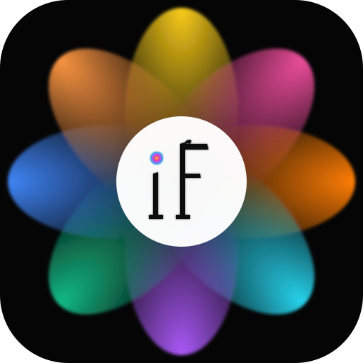
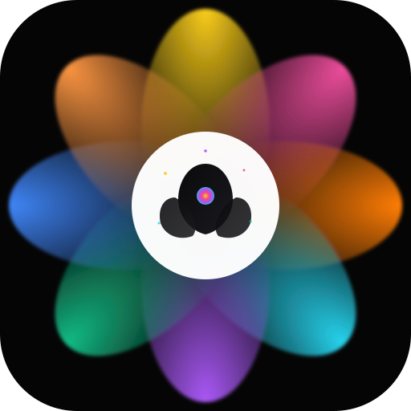

Petal Bloom — refined monograms ✨

Monogramme italique en serif Bodoni avec contraste haut. Le point du "i" est remplacé par une mini-aura arc-en-ciel. Élégant, premium, mémorable.

Lotus stylisé sombre au cœur des pétales colorés, avec une mini-aura en gradient au centre + sparkles dorés. Pas de lettres — seulement le symbole. Iconique, méditatif, brand-mark fort.